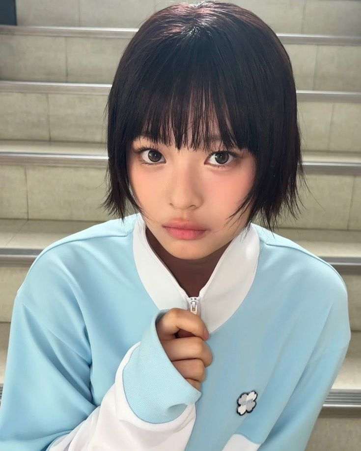

About NewJeans
NewJeans is a South Korean K-pop group formed in 2022 under ADOR. The group consists of five members: Minji, Hanni, Danielle, Haerin, and Hyein.
Group Members
Minji

Hanni
Danielle
Haerin
Hyein
Music
NewJeans are known for their unique “simple girls” image, inspired by the music and aesthetics of the 1990s and 2000s. Their hit songs include “Attention”, “Hype Boy”, and “Super Shy”.